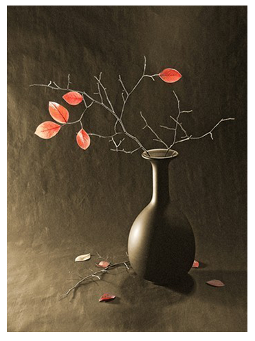
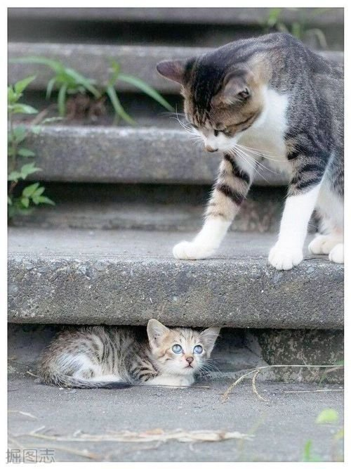
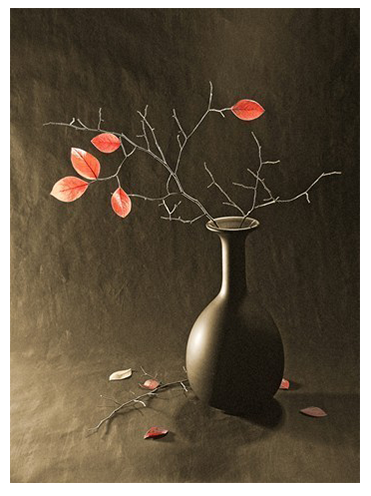
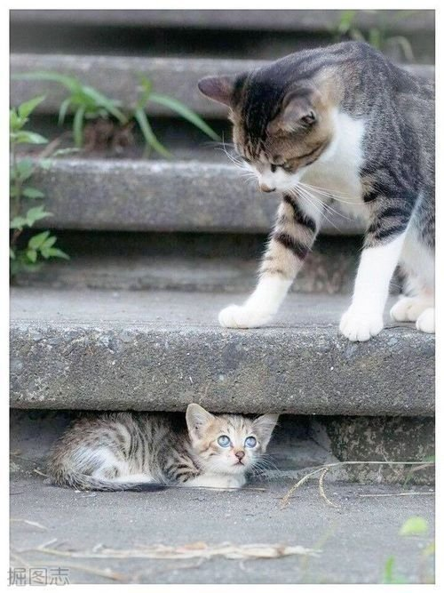

他说，她和它
分类：个人日记 发布日期：2016-07-05 00:20
他，是智商。她，是情商。它，是欲望。
他，包含了我的经验、想法和逻辑思维习惯。她，是我的情感和感受。嗯，对了，他还管理着我的记忆。而她只负责感受，但是她会找他要记忆，以此来反馈情感。这就可以解释，为什么有时明明不相识，确在第一次见面的时候，她感受到的是如此的亲切和自然。因为，他虚构了记忆，他给了她不存在的记忆。他知道这骗不了他自己，却可以让她安心舒适。记得小时候，是妈妈带着，母亲很严厉，父亲在外闯荡。从记事后没见过爸爸，他为爸爸塑造造一个温柔慈祥的性格，于是，在年前的晚上，被妈妈叫醒，妈妈说：这是爸爸。看着眼前这个陌生的男人，确是那样的熟悉，她感受到的是温暖，然后喏喏的喊了声：爸爸。爸爸，笑了，带动满脸的细密的胡渣，应了声哎。他，也笑了。
上小学时，父母那时会吵架，他，不能理解，无可奈何；她感到心慌，非常难受。她不知道发生了什么，她跑来问他，他指了指记忆的盒子，对她说：我们必须要做点什么了。那时周围的人似乎对读书非常的看重，因为很多有出息的人大都是读过书的，而这一点是唯一不受其他条件影响，而被大家所认同的。读书成绩好，大家都会喜欢你，爸妈也会高兴。他发现他的记忆盒子很空，很容易就能记住书本上的东西，当他第一次在妈妈面前将语文课本倒着背诵时，妈妈很高兴的夸奖了他，赞扬他聪明。由此，虽然他不知道倒着背书有什么意义，但是他知道该怎么做了。他把他的想法告诉了她，她虽然不知道倒着背书说明了什么，但是她很高兴。自此，他很努力，当然也有了回报，爸妈也为他感到自豪。
在没有有线的童年里，只有几个台，动画片也是在固定的点才播放，错过了就看不了了。每到那个点，它就会拉着他去看动画片，他也很喜欢看，因为能从中学到很多东西，和现在大多数儿童动画片不一样，那时的少儿动画片确实很好看，像【天书奇谭】、【阿凡提】等。对了，忘记介绍它了。一开始都没发现它，有一天，他看到她在喂它吃的，他问它从哪里来的，她说：这不是你养的吗？然后，他就把它带走了。经过观察，他发现它很奇特：它的行为非常直接，只要想到了就一定会去做，而且它高兴的时候是白色的，难过的时候就会变黑，有时还会变成彩色，而这都是后话了。而且，它和她非常亲近，只要她高兴，它就会活蹦乱跳；她不高兴，它就打不起精神。这种近乎纯粹的思维，没有一丝杂质，让她感到很舒服，所以也很喜欢喂她吃东西。他不敢让她和它一起待太久，他怕她把它喂太胖了，他会带不动它，拉不住它，这样免不了会让它到处撒野。虽然他很忙，但是它长胖了，他就会带它去散散步，因为他知道：它，像水一般形色于他物的东西，只有经常像水一样去奔跑，去释放，才能够保持纯净，而死水终会变暗、变臭，即使封闭的很好。
随着学习的东西越多，他发现记忆的盒子里的空间越来越小了，单纯存储记忆越来越麻烦了。他和她诉说了这个苦恼，她问：能把盒子改大一点吗？他说：不行的，这个盒子的材料非常特殊，只有靠记忆才能把他撑大，但是这样往里塞记忆就太累了。她闭着眼感受了一下，道：对哦，那我来帮忙，把感受不好的记忆清掉吧。他想了想，点点头和她一起梳理记忆。他翻出了一片记忆说道：这是妈妈打我的记忆，那次冤枉我偷东西。她握在手上感受了一下，我感觉到了委屈，要丢掉吗？他沉思了一下：不用，这个使我明白偷盗是大忌，拿别人东西别人会不高兴。她又捞出了一片记忆：咦？奶奶捡起掉在桌上的饭，我感受到了纠结，还要吗？他回道：要，奶奶让我知道珍惜粮食。看，这是奶奶讲的，打仗的时候，好多人吃不上饭的故事。还有，做事要适量适度，这样才不会多余纠结。她：啊，这些女孩子是谁？好可爱！他说：你以前见过，你不记得了，我看你喜欢就把她们画下来了，不过你还是不要看了，妈妈和老师好像不喜欢我和女孩子玩，作为男孩子的一员，和女孩子太亲密，他们就不能和我一起玩了。她怯懦的答道：哦，知道了。他知道，不管是男孩子，还是女孩子，她的感受都是很开心的，但是他看到四、五年级的哥哥姐姐在一起玩被其他孩子笑话了，有的还被家长骂了，他不想让妈妈看到这样的事。
记忆被全部整理了一遍，相同的东西被放到了一块，很多东西都变得清晰了，很容易就能找到。在学习中他也经常以这种方法梳理知识，学习效率很高，以至于在初中和小学一样，成绩都非常好。有一天，它注意到了记忆盒子，它看到里面玲琅满目的东西，眼睛都翻出花了，他告诉它，如果能把盒子装满，她会非常高兴哦。它非常高兴，天天缠着妈妈买书看一千零一夜、格林童话、伊索寓言等等。因为这些都是她喜欢的，童话里的角色都非常单纯，好人就是好人，坏人就是坏人，还有很多可爱的动物，感觉很舒服。他告诉它，还需要一些有其他的，这样太单调了。于是，他和它一起打游戏、捏橡皮泥塑像、种种花，他提出学音乐，但是只找到了基本的乐理书，没有乐器；学跳舞，但不知道怎么学；学画画，让父母买几本书，自己琢磨。刚开始画画很不习惯，因为你怎么画都不像。有一段时间，它喜欢画女性的身体，有一次被妈妈看到了它的画，妈妈说它画的很像，再接再厉。他很惊讶，之前他没阻止，是他知道有些事，好奇时是不应该阻止的，只有让它去了解，才能让它安心，可妈妈也没说它，说明妈妈也认为这是正常的。
升高中时，全县前一百名，在两所高中分开，做教学实验，他也在其中。在初三的暑假，他和它将它的画都烧了，是它要求的，他也不明白是为什么，他去问她，她说：这些画没有故事和记忆，我从中感受不到情感。它以为我不喜欢，就烧了，它有点完美主义，你要注意疏导它。我一开始不以为然，结果是它此后六、七年来一直没画过画，学画的记忆都快找不到了。时间过得就是这样的快，初三的暑假，家里的房子就他一个人，爸爸妈妈不在，拿着钥匙每天带着同学来家里捉迷藏、玩卡牌、打游戏。待到同学们都走了之后，他和她和它一起分享当天的趣事，在静谧的星空下，夏虫的稀疏声中，笑出声来。这时，奶奶定会喊他去吃西瓜，奶奶那时耳聪目明，会和他讲很多故事，那个年代的故事，他用嘴滤出一个个食指大的瓜子，津津有味的听着，殊不知，红红的瓜汁全都印在了洁白的衬衫上了。
高中，有两个发小和他在一起读书，一个男孩，一个女孩。它很喜欢那个女孩，但是他觉得有点暴力虽然漂亮，她感受到的是时而舒适，时而难受。高一，女孩和他坐在一起，女孩笑点很低，能轻易逗笑她，女孩也会说一些女孩纸看的电视剧、喜欢做的事和想的东西，他没有太留意，只知道男孩和女孩有很多不同。和父母谈论女孩的时候，爸爸赞同，妈妈没有表态，说暂时好好读书，有时听奶奶说一些讨厌女孩奶奶的事，她感受不清楚，于是跑去问他，他说：女孩是水做的，让它自然有一种亲近的感觉，你也会感觉如此，自然的东西总是会让人有好感的，以后你不要管太多，让我来处理。就这样，他专心学习，平时和同学嬉戏打闹，而后不小心成绩步入前三，又自嘲自己军训后剪了平头像奥巴马，被逗逼同学听到传到逗逼的数学老师耳中，于是就成为了大家心中的巴马。巴马长，巴马短的会经常有人来问他问题，他让她感受那些女孩，确实有天然的亲近感，尔后她也安心好多。说到逗逼的数学老师，就来谈谈老师们，不让他说，让她感受，她最喜欢的是班主任物理老师，性格温文尔雅，舒适自然；数学老师活泼；语文老师有两个，一个柔软，一个自恋(-_-);英语老师可爱漂亮，生物老师漂亮霸气；化学老师烦烦的。但是他觉得，数学老师和后来的语文老师都很喜欢用成人的眼光来和他交流。数学老师说他喜欢装逼，语文老师会在他打铃后回来的走廊上笑骂他哗众取宠。其实，他们都不懂，因为有时低调，才是最大的装逼，让人明显的以为他在装逼其实为了愉悦一下气氛而已（一口气码这么多字，请忽略这句话，情不自禁 — _ —）。其实都一直知道，大家能在一起，没有鸿沟般的差距，水平是差不多的，没有真正的天才，都是靠后天的努力，只是它比较偷懒，就算很喜欢学习，也不能坚持练习，结果是给人一种成绩很不稳定的感觉，却又在最后有胸有成竹的既视感。殊不知，期末考前的月假，他都是在爷爷那看书，因为用力看书而血糖不足倒在爷爷床上睡着，稀疏感应到年迈的爷爷迈着蹒跚的步伐为他盖被子。在 他印象中，爷爷是多病而又寡言的，姥爷是地主，爷爷读过书，当过村里的会计，和他这个读书人只有在这时才是最融洽的。平时除了奶奶和他拌嘴，哥哥、姐姐很早辍学出去了，她感到的是孤独和沧桑，他翻出小学时养蚕的记忆片段，那时候将体温捂出的蚕寄放在爷爷那养，每天清晨带着好朋友去采最嫩的桑葚叶，细细的擦干冰凉的晨露，爷爷会早早的等在那里，抽出放蚕的抽屉，他们几个会静静的把在上面看，毛孔感受着夏季早上六、七点的清凉，倾听着稀稀疏疏的咀嚼声，而后记忆片段变得模糊。爷爷手工好像也非常好，做的东西都像模像样，以至于奶奶现在回忆起来，会指着自己修的竹凳或扎的扫帚说不如老头子做得好。
回到高中，不得不说说寝室了。他翻找着高中寝室的记忆，发小中的男孩子，严，和他一样住上铺，他们可能都觉得住上铺要干净些，而他还觉得住上铺可以跳，武侠片的轻功都是反复的跳坑才练出来的，后来大部分人都走了之后，就搬下来了，因为下面摆个桌子就可以挑（台）灯夜读，满满的正能量。一开始布局是这样的，发小的下铺是一个眼镜度数很高的男孩，运，喜欢听歌和唱歌，唱歌鼻音很重，现在不知道他在大学业余时间里学音乐没；他和发小床位水平平行；他的下铺是逗逼贺或逗逼德，他们住的时间都很短，之所以记得，好像是有一次他不知道是因为什么笑得从床上掉下去，砸的就是德，贺和他一样是装逼党，所以记得很清；他的垂直指向是一个胖胖的男孩子，眯眯眼，她觉得很可爱，可是现在好久没联系了；胖男孩的下铺是涛哥，传说将会练成八块腹肌的男人，那时是六块，涛哥有暴力倾向，但是她感受到的是很温柔，他总结的是只对男孩子暴力的男孩最温柔（啥都不说，涛哥真没想让你请吃饭）；涛哥平行方向是莱布朗詹姆士·宵，嗓音很好，很会唱歌，比他黑（哈哈哈...）；宵的上铺是许，很会打乒乓，跳起来能踢到门梁（并且乐此不疲）。他们在下晚自习会集体跑到外面的小摊买烧烤和拌面，作为一天的犒赏，经常会碰到班上的女生，比如我们的班长、程姐姐等等。男生寝室会发生很多事，他才不记得曾经和宵一起在被窝里用p4看有颜色的小说呢，他才不记得因为运也看了，呆呆的走不动路呢；哼哼，涛哥才不会跟他们一般见识呢，毕竟是最温柔的男孩；他才不记得那年冬天因为两轮期末考试，学校空无一人，两个寝室去五块钱一夜的明天网吧通宵包夜呢，他才不是因为第一次看了有颜色的动作片才不记得那次通宵呢；他才不记得那个半夜摸干所有寝室孩子口袋的路人小偷呢，只是可惜了那片韵脚完美的【阿房宫赋·寝室篇】；他才不记得他们给他们班的女生商量着打分呢；他才不记得某人的p4里有‘艺术’图片呢；他才不记得......好吧，说太多会被打死的。下面这段有黑历史，但是想想也是青春的故事，写写做留念吧。
那是晚秋后的寒冬，非常干燥，他和发小严放月假回家，走到村头的路口，看到小山坡上的电信塔，不知谁提议要爬上去。真是一‘严’不和爬铁塔，他们花了很长时间才爬上去，铁塔很高，在冷风中摇摇欲坠，我们到达顶端感觉都站不住脚，摇摇欲坠，这个时候按剧本本因是破开云层见阳光的，然而仍是一片萧索，心情摇摇欲坠。看着格子似的田园，树杈似的马路，心中忽然有点不安，想赶回去，想赶回去。回去的时候有点晚，和严分开后，看到广场上被冷风卷起的塑料袋和灰尘，一片灰蒙蒙的，门是关着的，爸妈不在。他急忙跑回去，发现大家都回来了，为什么，因为爷爷刚走了。哥哥们告诉他，爷爷走前一直说，说他在靠椅上睡着了，叫奶奶给他盖被子。那天她哭的稀里糊涂，它无精打采，他却想笑，在靠椅上睡着是因为看书看累了，这段记忆是他和爷爷共同的记忆。见识过生死，就不由自主的想去思考其中，她有时会问他，有前世今生吗？他答不出，他只会说，前世之世，今生何义，但是这样反驳自己有何意义。从那之后，他开始关注哲学类的书籍和信息，一开始，他的思维并不能这么成熟，很多地方并不能透彻理解，急功近利，往往会有一些错误的结论。比如，他开始对身边的人进行一个情感等级的划分，这是一个很大的改变，因为开始对重要的人患得患失，虽然没那么容易动则生死，但是还是要珍惜眼前，不是么。他认为将周围人的情感划分为厌恶、陌生、好感、喜欢、爱；这样的情感阶梯似乎是对的，喜欢是索取，欲望驱动，爱是给予，情感驱动；而且，爱貌似更高级一些，甚至无条件一些，比如父爱、母爱及手足亲情之类。这样貌似理想化的分类，让人没有反驳的欲望，好似真的是对的，可惜少了现实的介入，这个我们后面再让他纠正。他有一个习惯，会在放松的时候盯着某样东西看，当然对象大多数是人，这样确实会让别人感觉有点不礼貌，以至于有时大学室友以为他想捡肥皂。其实那种状态很微妙，他不会再用理性去自动分析看到的东西，她不再凭借记忆去感受，那么直接，那么真诚。其实有一点小经验，大多数外表坚硬的人，其实一般都是内心柔软的，如果你用真诚的目光去直视，会被慌乱的反问干什么之类的，那就是了，不过前提是那不是陌生人，否则被打了别怪我。事情发自一次晚上，女孩是英语课代表，发本子到他位子时，他依靠着自己的右手，单纯的看着女孩，可是和他多数女孩微笑着躲避他的眼神不一样，女孩伸出手指点了点他的额头，并给了他一粒糖，说：给你提提神。吃着糖，把它惊醒了，有时很多事就是那么自然，糖是甜的，感觉自然是好的。晚上自习时，他和女孩会一起讨论课堂的难题，有时还会谈谈周围男生和女生的事，分享秘密。他学习思考，她感受温柔，完全没有察觉它已经长得很大了，有一次它跑出去和她表白，没有他的措辞，没有她的情感，只是苍白的表达了它自己的欲望。女孩生气的撕碎了信纸，哭了，不知道是因为尴尬伤心，还是因为气愤和失望。这样的结果让它无精打采，她因为伤心把自己关了起来，他不知所措，没有她的帮助，他不知道怎么处理。下雨天，他跑去给女孩撑伞，女孩看着他来跑开，他追女孩跑，这场景一点不浪漫，因为一直下雨。晚上，他做题时没有心思，胡乱做了一堆，大半都错了。一连几天的压抑，他觉得好累，它也开始变灰了，他想不能这样要快点结束，他和父母谈论了这件事，没有邀请她来旁听。父母觉得他已经大了，学习很重要，但开心还是最重要的，心不要变坏。于是当女孩的闺蜜们来质问他时，他编了一个‘合理’的理由：为了学习，并不喜欢。其实，她不再旁边，要不然也不会说出这种让女孩们鄙视的话，他还是太自以为是了，但毕竟理性总是自私的，不能怪他。一段时间后，女孩可能以为这件事影响到他的成绩，约他出来，伸出手对他说：不要想太多，我们还是好朋友。他偷偷喊她出来，她看着女孩，女孩躲避了他那看似无理的目光，她说：很柔软，但不温暖了。他伸出手，握了握女孩的手，有点疑惑，有点不解：很柔软，但不温暖了？是啊，一直是这么温柔，只是并不是因为他才变得这样，他一直给她提供了错误的数据。高中毕业聚会，有人提起这件事，贺说自己不知道，还抱怨说为什么全班人都知道，没一个人告诉我，大家都说怕贺话多说出去，贺抱怨说到：怎么可能，这种话我不可能乱说。他看着这一幕，他相信贺是不会说出去，但是全班每个人都心照不宣，因为不管男女都是喜欢女孩的，都在呵护女孩，而他可能也是这样，只是欺骗了她，让她有错觉，说来他还没有对他说过关心的话。那时都不会关心别人，没说过关心的话，关心这一不再以自我为中心的思维的成熟 ，当然不是一蹴而就的，待我慢慢道来。
心性的成熟，认知的成熟随着时间成长，经历中成长，他能恰时的获取，而情感上的成熟，她的需要通过异性的交流。大学时期，有几个重要的女性，其实写到这里他是不愿写的，他没有谈过恋爱，妄谈情感有种装逼不知所谓，傻逼游刃有余的感觉。但是转而想想，这是对自己的剖析，记录大学这种经历少，想法颇多的情感历程。【待续......】
写着写着发现已经写这么多了，算了，如果有要求写待续部分的，我就写，现在暂时这样吧。这篇文章本应放进私人日志的，但想想已经快一年多没交日志了，强迫症必须要交一篇。本篇日志和以往风格有点不同，是以第三人称为视角，所以装逼成分略少，阅读过程中如有不适，请尽快终止。最后，友情提示：文明阅读，不要转载，不发广告评论，你可以带走他的经验，我只想留下他、她和它的故事。
上小学时，父母那时会吵架，他，不能理解，无可奈何；她感到心慌，非常难受。她不知道发生了什么，她跑来问他，他指了指记忆的盒子，对她说：我们必须要做点什么了。那时周围的人似乎对读书非常的看重，因为很多有出息的人大都是读过书的，而这一点是唯一不受其他条件影响，而被大家所认同的。读书成绩好，大家都会喜欢你，爸妈也会高兴。他发现他的记忆盒子很空，很容易就能记住书本上的东西，当他第一次在妈妈面前将语文课本倒着背诵时，妈妈很高兴的夸奖了他，赞扬他聪明。由此，虽然他不知道倒着背书有什么意义，但是他知道该怎么做了。他把他的想法告诉了她，她虽然不知道倒着背书说明了什么，但是她很高兴。自此，他很努力，当然也有了回报，爸妈也为他感到自豪。
在没有有线的童年里，只有几个台，动画片也是在固定的点才播放，错过了就看不了了。每到那个点，它就会拉着他去看动画片，他也很喜欢看，因为能从中学到很多东西，和现在大多数儿童动画片不一样，那时的少儿动画片确实很好看，像【天书奇谭】、【阿凡提】等。对了，忘记介绍它了。一开始都没发现它，有一天，他看到她在喂它吃的，他问它从哪里来的，她说：这不是你养的吗？然后，他就把它带走了。经过观察，他发现它很奇特：它的行为非常直接，只要想到了就一定会去做，而且它高兴的时候是白色的，难过的时候就会变黑，有时还会变成彩色，而这都是后话了。而且，它和她非常亲近，只要她高兴，它就会活蹦乱跳；她不高兴，它就打不起精神。这种近乎纯粹的思维，没有一丝杂质，让她感到很舒服，所以也很喜欢喂她吃东西。他不敢让她和它一起待太久，他怕她把它喂太胖了，他会带不动它，拉不住它，这样免不了会让它到处撒野。虽然他很忙，但是它长胖了，他就会带它去散散步，因为他知道：它，像水一般形色于他物的东西，只有经常像水一样去奔跑，去释放，才能够保持纯净，而死水终会变暗、变臭，即使封闭的很好。
随着学习的东西越多，他发现记忆的盒子里的空间越来越小了，单纯存储记忆越来越麻烦了。他和她诉说了这个苦恼，她问：能把盒子改大一点吗？他说：不行的，这个盒子的材料非常特殊，只有靠记忆才能把他撑大，但是这样往里塞记忆就太累了。她闭着眼感受了一下，道：对哦，那我来帮忙，把感受不好的记忆清掉吧。他想了想，点点头和她一起梳理记忆。他翻出了一片记忆说道：这是妈妈打我的记忆，那次冤枉我偷东西。她握在手上感受了一下，我感觉到了委屈，要丢掉吗？他沉思了一下：不用，这个使我明白偷盗是大忌，拿别人东西别人会不高兴。她又捞出了一片记忆：咦？奶奶捡起掉在桌上的饭，我感受到了纠结，还要吗？他回道：要，奶奶让我知道珍惜粮食。看，这是奶奶讲的，打仗的时候，好多人吃不上饭的故事。还有，做事要适量适度，这样才不会多余纠结。她：啊，这些女孩子是谁？好可爱！他说：你以前见过，你不记得了，我看你喜欢就把她们画下来了，不过你还是不要看了，妈妈和老师好像不喜欢我和女孩子玩，作为男孩子的一员，和女孩子太亲密，他们就不能和我一起玩了。她怯懦的答道：哦，知道了。他知道，不管是男孩子，还是女孩子，她的感受都是很开心的，但是他看到四、五年级的哥哥姐姐在一起玩被其他孩子笑话了，有的还被家长骂了，他不想让妈妈看到这样的事。
记忆被全部整理了一遍，相同的东西被放到了一块，很多东西都变得清晰了，很容易就能找到。在学习中他也经常以这种方法梳理知识，学习效率很高，以至于在初中和小学一样，成绩都非常好。有一天，它注意到了记忆盒子，它看到里面玲琅满目的东西，眼睛都翻出花了，他告诉它，如果能把盒子装满，她会非常高兴哦。它非常高兴，天天缠着妈妈买书看一千零一夜、格林童话、伊索寓言等等。因为这些都是她喜欢的，童话里的角色都非常单纯，好人就是好人，坏人就是坏人，还有很多可爱的动物，感觉很舒服。他告诉它，还需要一些有其他的，这样太单调了。于是，他和它一起打游戏、捏橡皮泥塑像、种种花，他提出学音乐，但是只找到了基本的乐理书，没有乐器；学跳舞，但不知道怎么学；学画画，让父母买几本书，自己琢磨。刚开始画画很不习惯，因为你怎么画都不像。有一段时间，它喜欢画女性的身体，有一次被妈妈看到了它的画，妈妈说它画的很像，再接再厉。他很惊讶，之前他没阻止，是他知道有些事，好奇时是不应该阻止的，只有让它去了解，才能让它安心，可妈妈也没说它，说明妈妈也认为这是正常的。
升高中时，全县前一百名，在两所高中分开，做教学实验，他也在其中。在初三的暑假，他和它将它的画都烧了，是它要求的，他也不明白是为什么，他去问她，她说：这些画没有故事和记忆，我从中感受不到情感。它以为我不喜欢，就烧了，它有点完美主义，你要注意疏导它。我一开始不以为然，结果是它此后六、七年来一直没画过画，学画的记忆都快找不到了。时间过得就是这样的快，初三的暑假，家里的房子就他一个人，爸爸妈妈不在，拿着钥匙每天带着同学来家里捉迷藏、玩卡牌、打游戏。待到同学们都走了之后，他和她和它一起分享当天的趣事，在静谧的星空下，夏虫的稀疏声中，笑出声来。这时，奶奶定会喊他去吃西瓜，奶奶那时耳聪目明，会和他讲很多故事，那个年代的故事，他用嘴滤出一个个食指大的瓜子，津津有味的听着，殊不知，红红的瓜汁全都印在了洁白的衬衫上了。
高中，有两个发小和他在一起读书，一个男孩，一个女孩。它很喜欢那个女孩，但是他觉得有点暴力虽然漂亮，她感受到的是时而舒适，时而难受。高一，女孩和他坐在一起，女孩笑点很低，能轻易逗笑她，女孩也会说一些女孩纸看的电视剧、喜欢做的事和想的东西，他没有太留意，只知道男孩和女孩有很多不同。和父母谈论女孩的时候，爸爸赞同，妈妈没有表态，说暂时好好读书，有时听奶奶说一些讨厌女孩奶奶的事，她感受不清楚，于是跑去问他，他说：女孩是水做的，让它自然有一种亲近的感觉，你也会感觉如此，自然的东西总是会让人有好感的，以后你不要管太多，让我来处理。就这样，他专心学习，平时和同学嬉戏打闹，而后不小心成绩步入前三，又自嘲自己军训后剪了平头像奥巴马，被逗逼同学听到传到逗逼的数学老师耳中，于是就成为了大家心中的巴马。巴马长，巴马短的会经常有人来问他问题，他让她感受那些女孩，确实有天然的亲近感，尔后她也安心好多。说到逗逼的数学老师，就来谈谈老师们，不让他说，让她感受，她最喜欢的是班主任物理老师，性格温文尔雅，舒适自然；数学老师活泼；语文老师有两个，一个柔软，一个自恋(-_-);英语老师可爱漂亮，生物老师漂亮霸气；化学老师烦烦的。但是他觉得，数学老师和后来的语文老师都很喜欢用成人的眼光来和他交流。数学老师说他喜欢装逼，语文老师会在他打铃后回来的走廊上笑骂他哗众取宠。其实，他们都不懂，因为有时低调，才是最大的装逼，让人明显的以为他在装逼其实为了愉悦一下气氛而已（一口气码这么多字，请忽略这句话，情不自禁 — _ —）。其实都一直知道，大家能在一起，没有鸿沟般的差距，水平是差不多的，没有真正的天才，都是靠后天的努力，只是它比较偷懒，就算很喜欢学习，也不能坚持练习，结果是给人一种成绩很不稳定的感觉，却又在最后有胸有成竹的既视感。殊不知，期末考前的月假，他都是在爷爷那看书，因为用力看书而血糖不足倒在爷爷床上睡着，稀疏感应到年迈的爷爷迈着蹒跚的步伐为他盖被子。在 他印象中，爷爷是多病而又寡言的，姥爷是地主，爷爷读过书，当过村里的会计，和他这个读书人只有在这时才是最融洽的。平时除了奶奶和他拌嘴，哥哥、姐姐很早辍学出去了，她感到的是孤独和沧桑，他翻出小学时养蚕的记忆片段，那时候将体温捂出的蚕寄放在爷爷那养，每天清晨带着好朋友去采最嫩的桑葚叶，细细的擦干冰凉的晨露，爷爷会早早的等在那里，抽出放蚕的抽屉，他们几个会静静的把在上面看，毛孔感受着夏季早上六、七点的清凉，倾听着稀稀疏疏的咀嚼声，而后记忆片段变得模糊。爷爷手工好像也非常好，做的东西都像模像样，以至于奶奶现在回忆起来，会指着自己修的竹凳或扎的扫帚说不如老头子做得好。
回到高中，不得不说说寝室了。他翻找着高中寝室的记忆，发小中的男孩子，严，和他一样住上铺，他们可能都觉得住上铺要干净些，而他还觉得住上铺可以跳，武侠片的轻功都是反复的跳坑才练出来的，后来大部分人都走了之后，就搬下来了，因为下面摆个桌子就可以挑（台）灯夜读，满满的正能量。一开始布局是这样的，发小的下铺是一个眼镜度数很高的男孩，运，喜欢听歌和唱歌，唱歌鼻音很重，现在不知道他在大学业余时间里学音乐没；他和发小床位水平平行；他的下铺是逗逼贺或逗逼德，他们住的时间都很短，之所以记得，好像是有一次他不知道是因为什么笑得从床上掉下去，砸的就是德，贺和他一样是装逼党，所以记得很清；他的垂直指向是一个胖胖的男孩子，眯眯眼，她觉得很可爱，可是现在好久没联系了；胖男孩的下铺是涛哥，传说将会练成八块腹肌的男人，那时是六块，涛哥有暴力倾向，但是她感受到的是很温柔，他总结的是只对男孩子暴力的男孩最温柔（啥都不说，涛哥真没想让你请吃饭）；涛哥平行方向是莱布朗詹姆士·宵，嗓音很好，很会唱歌，比他黑（哈哈哈...）；宵的上铺是许，很会打乒乓，跳起来能踢到门梁（并且乐此不疲）。他们在下晚自习会集体跑到外面的小摊买烧烤和拌面，作为一天的犒赏，经常会碰到班上的女生，比如我们的班长、程姐姐等等。男生寝室会发生很多事，他才不记得曾经和宵一起在被窝里用p4看有颜色的小说呢，他才不记得因为运也看了，呆呆的走不动路呢；哼哼，涛哥才不会跟他们一般见识呢，毕竟是最温柔的男孩；他才不记得那年冬天因为两轮期末考试，学校空无一人，两个寝室去五块钱一夜的明天网吧通宵包夜呢，他才不是因为第一次看了有颜色的动作片才不记得那次通宵呢；他才不记得那个半夜摸干所有寝室孩子口袋的路人小偷呢，只是可惜了那片韵脚完美的【阿房宫赋·寝室篇】；他才不记得他们给他们班的女生商量着打分呢；他才不记得某人的p4里有‘艺术’图片呢；他才不记得......好吧，说太多会被打死的。下面这段有黑历史，但是想想也是青春的故事，写写做留念吧。
那是晚秋后的寒冬，非常干燥，他和发小严放月假回家，走到村头的路口，看到小山坡上的电信塔，不知谁提议要爬上去。真是一‘严’不和爬铁塔，他们花了很长时间才爬上去，铁塔很高，在冷风中摇摇欲坠，我们到达顶端感觉都站不住脚，摇摇欲坠，这个时候按剧本本因是破开云层见阳光的，然而仍是一片萧索，心情摇摇欲坠。看着格子似的田园，树杈似的马路，心中忽然有点不安，想赶回去，想赶回去。回去的时候有点晚，和严分开后，看到广场上被冷风卷起的塑料袋和灰尘，一片灰蒙蒙的，门是关着的，爸妈不在。他急忙跑回去，发现大家都回来了，为什么，因为爷爷刚走了。哥哥们告诉他，爷爷走前一直说，说他在靠椅上睡着了，叫奶奶给他盖被子。那天她哭的稀里糊涂，它无精打采，他却想笑，在靠椅上睡着是因为看书看累了，这段记忆是他和爷爷共同的记忆。见识过生死，就不由自主的想去思考其中，她有时会问他，有前世今生吗？他答不出，他只会说，前世之世，今生何义，但是这样反驳自己有何意义。从那之后，他开始关注哲学类的书籍和信息，一开始，他的思维并不能这么成熟，很多地方并不能透彻理解，急功近利，往往会有一些错误的结论。比如，他开始对身边的人进行一个情感等级的划分，这是一个很大的改变，因为开始对重要的人患得患失，虽然没那么容易动则生死，但是还是要珍惜眼前，不是么。他认为将周围人的情感划分为厌恶、陌生、好感、喜欢、爱；这样的情感阶梯似乎是对的，喜欢是索取，欲望驱动，爱是给予，情感驱动；而且，爱貌似更高级一些，甚至无条件一些，比如父爱、母爱及手足亲情之类。这样貌似理想化的分类，让人没有反驳的欲望，好似真的是对的，可惜少了现实的介入，这个我们后面再让他纠正。他有一个习惯，会在放松的时候盯着某样东西看，当然对象大多数是人，这样确实会让别人感觉有点不礼貌，以至于有时大学室友以为他想捡肥皂。其实那种状态很微妙，他不会再用理性去自动分析看到的东西，她不再凭借记忆去感受，那么直接，那么真诚。其实有一点小经验，大多数外表坚硬的人，其实一般都是内心柔软的，如果你用真诚的目光去直视，会被慌乱的反问干什么之类的，那就是了，不过前提是那不是陌生人，否则被打了别怪我。事情发自一次晚上，女孩是英语课代表，发本子到他位子时，他依靠着自己的右手，单纯的看着女孩，可是和他多数女孩微笑着躲避他的眼神不一样，女孩伸出手指点了点他的额头，并给了他一粒糖，说：给你提提神。吃着糖，把它惊醒了，有时很多事就是那么自然，糖是甜的，感觉自然是好的。晚上自习时，他和女孩会一起讨论课堂的难题，有时还会谈谈周围男生和女生的事，分享秘密。他学习思考，她感受温柔，完全没有察觉它已经长得很大了，有一次它跑出去和她表白，没有他的措辞，没有她的情感，只是苍白的表达了它自己的欲望。女孩生气的撕碎了信纸，哭了，不知道是因为尴尬伤心，还是因为气愤和失望。这样的结果让它无精打采，她因为伤心把自己关了起来，他不知所措，没有她的帮助，他不知道怎么处理。下雨天，他跑去给女孩撑伞，女孩看着他来跑开，他追女孩跑，这场景一点不浪漫，因为一直下雨。晚上，他做题时没有心思，胡乱做了一堆，大半都错了。一连几天的压抑，他觉得好累，它也开始变灰了，他想不能这样要快点结束，他和父母谈论了这件事，没有邀请她来旁听。父母觉得他已经大了，学习很重要，但开心还是最重要的，心不要变坏。于是当女孩的闺蜜们来质问他时，他编了一个‘合理’的理由：为了学习，并不喜欢。其实，她不再旁边，要不然也不会说出这种让女孩们鄙视的话，他还是太自以为是了，但毕竟理性总是自私的，不能怪他。一段时间后，女孩可能以为这件事影响到他的成绩，约他出来，伸出手对他说：不要想太多，我们还是好朋友。他偷偷喊她出来，她看着女孩，女孩躲避了他那看似无理的目光，她说：很柔软，但不温暖了。他伸出手，握了握女孩的手，有点疑惑，有点不解：很柔软，但不温暖了？是啊，一直是这么温柔，只是并不是因为他才变得这样，他一直给她提供了错误的数据。高中毕业聚会，有人提起这件事，贺说自己不知道，还抱怨说为什么全班人都知道，没一个人告诉我，大家都说怕贺话多说出去，贺抱怨说到：怎么可能，这种话我不可能乱说。他看着这一幕，他相信贺是不会说出去，但是全班每个人都心照不宣，因为不管男女都是喜欢女孩的，都在呵护女孩，而他可能也是这样，只是欺骗了她，让她有错觉，说来他还没有对他说过关心的话。那时都不会关心别人，没说过关心的话，关心这一不再以自我为中心的思维的成熟 ，当然不是一蹴而就的，待我慢慢道来。
所谓的以自我为中心的思维，是他摸索出来的超强独立思维，有点西方的个人主义。打个简单比方，有时你想帮别人，但总是帮倒忙，或者经常为一些小事而迁就别人，让自己产生负面思维，久而久之迁怒他人。要想不打扰别人，又要放松自己，就要让自己的思维形成一个惯性习惯：就是遇到的一切事，都要优先考虑自己，再推己及人，只有自己不委屈，只有自己有能力了，才不会迁怒他人，才能够帮助他人。这种思维看起来很容易，其实很难养成，人毕竟是社会性的生物，总是会担心他人的得失和目光，因而束缚自己，不能成为一个完全自我的人。当然，自私是它的天性，他不能完全抹杀，只是相比其他有个排序优先级而已，故自私自利也是完全自我的重要部分。说到这里，可能有人会以为他会讲大学里重要的哲学课——马克思思想，不会讲的，马克思这位可爱的大神棍，在博物馆这么多年憋出一个需要整个世界去实践修正的自然大规律框架，自己却撒手不管我们这些苦闷的学生。但是毕竟是自然的大规律，人之性不仅仅是一句简单的对立统一就可以概括的，要不怎么说人定胜天呢，算了又有主观能动性了（—_—），和袁天罡、刘伯温这些人历史大神棍比起来，马克思论证的对象都要大得多，那是世界和宇宙云云的奥义。总之，探讨思维的游戏是他最喜欢做的，但是他知道思维习惯的养成远要困难的多，不像身体的反应，20天就可以养成，只要练习就可以熟练。当然，身体习惯的养成，还是需要自己花心思去提高效率的。比如，大多数小孩，特别是男孩子，穿衣服时衣袖的袖口会很容易弄脏，最为明显的是冬天，穿的外套其他地方都很干净，就袖口乌七八黑的，洗了感觉浪费洗衣粉。其实分析可以发现，因为没事的时候喜欢用手去捻袖口（冬衣的袖口都要略盖过手腕一点），亦或者是手臂喜欢趴在桌上，于是就染了很多污垢。其实只要在手没事的时候习惯性的让手指弯向手掌即可，也可以学一些玩手的技巧，没事的时候自娱自乐，靠近桌子手臂也不要完全趴在桌上，用小臂搭在桌延扬起即可，这一肢体动作的习惯性养成一开始有点难，但是当他把衣服换成白色的时候就会经常提醒他注意了。其他的有很多，只要你认为好的都可以，比如睡觉穿睡衣的习惯，起床喝温水的习惯，喝水分三口的习惯，洗脸用温水的习惯，擦拭皮肤上的水用毛巾拍的习惯，打开种子用迅雷的习惯......
记得曾经看到的一本叫《说禅论道》的书，里面讲各宗教的价值观和行为史，其实偏向的概括就是在修身养性中对思维习惯和身体习惯的培养，至于方向要看你想成为什么样的人，有信仰吗？大学视野开阔，是塑造人生观、价值观的重要场所，就至于思维习惯，他可以接起高中对周围人感情的等级划分，这是为了在关键时候能做出无愧于心的选择，毕竟把谁都当朋友的人是没有真正朋友的。他把情感等级划分为：陌生、好感、爱、喜欢。这里比较之前，除去了厌恶，将其归入了陌生，调低了爱的级别，是因为加入了现实的考虑。厌恶容易让它产生负面情绪，归入陌生后可以净化环境，而且厌恶很容易使之对其产生偏激的看法，不理智；爱是自发的，无条件的给予，但人都是理智的，只要一旦有不爱的理由，这种不稳定而又风雨飘摇的情感马上就会被否定，广为流传的‘我再也不相信爱情’就是广大人民的智慧；爱，为何物，佛曰：不可说，不能说。喜欢，并不是单方向的索取，而是互动的，相互的索取，相互帮助，相互理解，共同创作价值，单恋没有互动，属于自己对欲望的喜欢。喜欢是有相互的故事，以记忆为载体，需要互相交互，相互沟通产生碰撞的情愫；有了记忆的凭证，才不会丧失喜欢的理由，加上理性的调剂亦能不失浪漫和幽默。前面的以自我为中心的思维，很容易让自己感到孤独，需要添加对重要的人进行关注和关心的行为，像打打电话，聊聊QQ，即便是发QQ生日祝福也是看清楚是谁而带着心中真正的祝福而发的，没有打扰的突兀，只有问候的温情。喔，多情的人，走到哪里都不孤单的哟。
写着写着发现已经写这么多了，算了，如果有要求写待续部分的，我就写，现在暂时这样吧。这篇文章本应放进私人日志的，但想想已经快一年多没交日志了，强迫症必须要交一篇。本篇日志和以往风格有点不同，是以第三人称为视角，所以装逼成分略少，阅读过程中如有不适，请尽快终止。最后，友情提示：文明阅读，不要转载，不发广告评论，你可以带走他的经验，我只想留下他、她和它的故事。